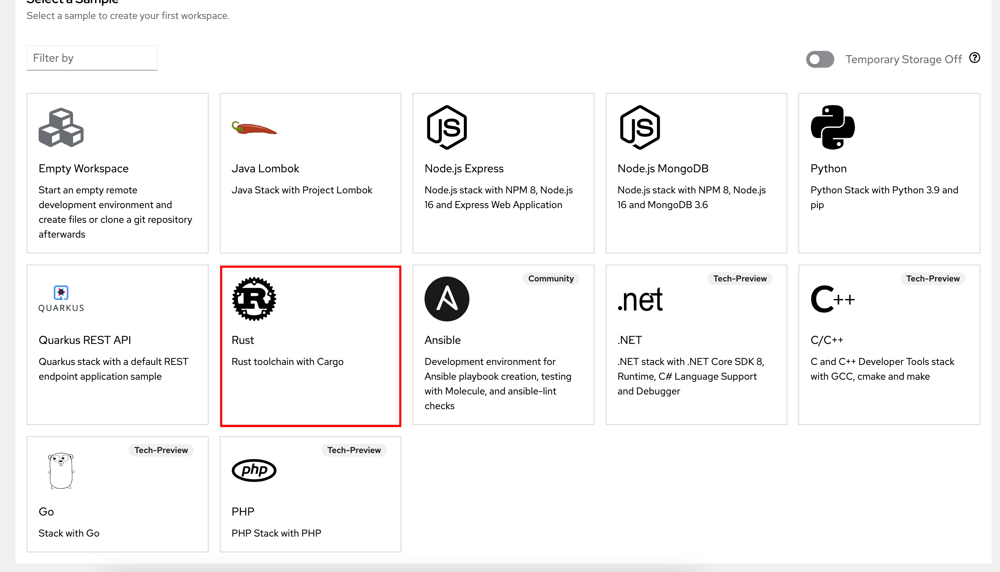
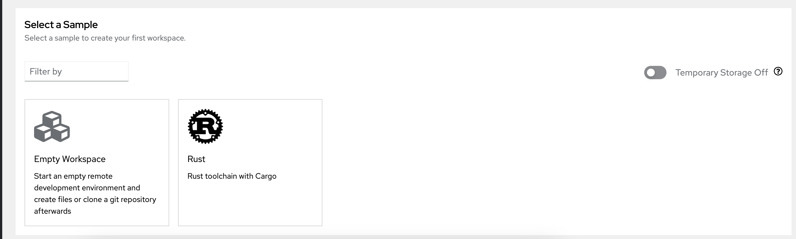

Customizing Samples in the Dashboard
The Dev Spaces dashboard offers a number of getting started samples allowing developers to quickly launch workspaces at the click of a button without providing Git repository URLs or Devfiles.
In this section, you will learn how to provide developers with an easy way to launch workspaces by clicking on menu entries in the dashboard rather than manually providing Git repository URLs.
Lab: Launching Workspaces from the Dashboard
In this hands-on lab, you will add a new launcher to the samples dashboard for an example Rust programming language project.
-
The sample dashboard in Dev Spaces is populated from JSON files. The sample format is available at https://github.com/redhat-developer/devspaces-images/blob/devspaces-3-rhel-8/devspaces-dashboard/samples/index.json.
-
Inspect the sample Rust application at https://github.com/rsriniva/rust-devspaces. This simple example imports an ASCII art library and prints a simple message. Fork this repository to your own GitHub account.
-
Create a new file named
rust-sample.jsonon your local workstation. It consists of a list of JSON objects with fields describing the name of the sample, a brief description, tags, and the URL where the source code and devfile are available for the sample. A base64 encoded SVG image (iconfield) is used to provide an intuitive image for the sample when it is displayed in the dashboard. Add content as follows:[ { "id": "rust", "displayName": "Rust", "description": "Rust toolchain with Cargo", "tags": [ "Rust", "Cargo", "UBI8" ], "url": "https://github.com/rsriniva/rust-devspaces", "icon": { "mediatype": "image/svg+xml", "base64data": "PHN2ZyB2ZXJzaW9uPSIxLjEiIGhlaWdodD0iMTA2IiB3aWR0aD0iMTA2IiB4bWxucz0iaHR0cDovL3d3dy53My5vcmcvMjAwMC9zdmciIHhtbG5zOnhsaW5rPSJodHRwOi8vd3d3LnczLm9yZy8xOTk5L3hsaW5rIj4KPGcgaWQ9ImxvZ28iIHRyYW5zZm9ybT0idHJhbnNsYXRlKDUzLCA1MykiPgogIDxwYXRoIGlkPSJyIiB0cmFuc2Zvcm09InRyYW5zbGF0ZSgwLjUsIDAuNSkiIHN0cm9rZT0iYmxhY2siIHN0cm9rZS13aWR0aD0iMSIgc3Ryb2tlLWxpbmVqb2luPSJyb3VuZCIgZD0iCiAgICBNIC05LC0xNSBIIDQgQyAxMiwtMTUgMTIsLTcgNCwtNyBIIC05IFoKICAgIE0gLTQwLDIyIEggMCBWIDExIEggLTkgViAzIEggMSBDIDEyLDMgNiwyMiAxNSwyMiBIIDQwCiAgICBWIDMgSCAzNCBWIDUgQyAzNCwxMyAyNSwxMiAyNCw3IEMgMjMsMiAxOSwtMiAxOCwtMiBDIDMzLC0xMCAyNCwtMjYgMTIsLTI2IEggLTM1CiAgICBWIC0xNSBIIC0yNSBWIDExIEggLTQwIFoiIC8+CiAgPGcgaWQ9ImdlYXIiIG1hc2s9InVybCgjaG9sZXMpIj4KICAgIDxjaXJjbGUgcj0iNDMiIGZpbGw9Im5vbmUiIHN0cm9rZT0iYmxhY2siIHN0cm9rZS13aWR0aD0iOSIgLz4KICAgIDxnIGlkPSJjb2dzIj4KICAgICAgPHBvbHlnb24gaWQ9ImNvZyIgc3Ryb2tlPSJibGFjayIgc3Ryb2tlLXdpZHRoPSIzIiBzdHJva2UtbGluZWpvaW49InJvdW5kIiBwb2ludHM9IjQ2LDMgNTEsMCA0NiwtMyIgLz4KICAgICAgPHVzZSB4bGluazpocmVmPSIjY29nIiB0cmFuc2Zvcm09InJvdGF0ZSgxMS4yNSkiIC8+CiAgICAgIDx1c2UgeGxpbms6aHJlZj0iI2NvZyIgdHJhbnNmb3JtPSJyb3RhdGUoMjIuNTApIiAvPgogICAgICA8dXNlIHhsaW5rOmhyZWY9IiNjb2ciIHRyYW5zZm9ybT0icm90YXRlKDMzLjc1KSIgLz4KICAgICAgPHVzZSB4bGluazpocmVmPSIjY29nIiB0cmFuc2Zvcm09InJvdGF0ZSg0NS4wMCkiIC8+CiAgICAgIDx1c2UgeGxpbms6aHJlZj0iI2NvZyIgdHJhbnNmb3JtPSJyb3RhdGUoNTYuMjUpIiAvPgogICAgICA8dXNlIHhsaW5rOmhyZWY9IiNjb2ciIHRyYW5zZm9ybT0icm90YXRlKDY3LjUwKSIgLz4KICAgICAgPHVzZSB4bGluazpocmVmPSIjY29nIiB0cmFuc2Zvcm09InJvdGF0ZSg3OC43NSkiIC8+CiAgICAgIDx1c2UgeGxpbms6aHJlZj0iI2NvZyIgdHJhbnNmb3JtPSJyb3RhdGUoOTAuMDApIiAvPgogICAgICA8dXNlIHhsaW5rOmhyZWY9IiNjb2ciIHRyYW5zZm9ybT0icm90YXRlKDEwMS4yNSkiIC8+CiAgICAgIDx1c2UgeGxpbms6aHJlZj0iI2NvZyIgdHJhbnNmb3JtPSJyb3RhdGUoMTEyLjUwKSIgLz4KICAgICAgPHVzZSB4bGluazpocmVmPSIjY29nIiB0cmFuc2Zvcm09InJvdGF0ZSgxMjMuNzUpIiAvPgogICAgICA8dXNlIHhsaW5rOmhyZWY9IiNjb2ciIHRyYW5zZm9ybT0icm90YXRlKDEzNS4wMCkiIC8+CiAgICAgIDx1c2UgeGxpbms6aHJlZj0iI2NvZyIgdHJhbnNmb3JtPSJyb3RhdGUoMTQ2LjI1KSIgLz4KICAgICAgPHVzZSB4bGluazpocmVmPSIjY29nIiB0cmFuc2Zvcm09InJvdGF0ZSgxNTcuNTApIiAvPgogICAgICA8dXNlIHhsaW5rOmhyZWY9IiNjb2ciIHRyYW5zZm9ybT0icm90YXRlKDE2OC43NSkiIC8+CiAgICAgIDx1c2UgeGxpbms6aHJlZj0iI2NvZyIgdHJhbnNmb3JtPSJyb3RhdGUoMTgwLjAwKSIgLz4KICAgICAgPHVzZSB4bGluazpocmVmPSIjY29nIiB0cmFuc2Zvcm09InJvdGF0ZSgxOTEuMjUpIiAvPgogICAgICA8dXNlIHhsaW5rOmhyZWY9IiNjb2ciIHRyYW5zZm9ybT0icm90YXRlKDIwMi41MCkiIC8+CiAgICAgIDx1c2UgeGxpbms6aHJlZj0iI2NvZyIgdHJhbnNmb3JtPSJyb3RhdGUoMjEzLjc1KSIgLz4KICAgICAgPHVzZSB4bGluazpocmVmPSIjY29nIiB0cmFuc2Zvcm09InJvdGF0ZSgyMjUuMDApIiAvPgogICAgICA8dXNlIHhsaW5rOmhyZWY9IiNjb2ciIHRyYW5zZm9ybT0icm90YXRlKDIzNi4yNSkiIC8+CiAgICAgIDx1c2UgeGxpbms6aHJlZj0iI2NvZyIgdHJhbnNmb3JtPSJyb3RhdGUoMjQ3LjUwKSIgLz4KICAgICAgPHVzZSB4bGluazpocmVmPSIjY29nIiB0cmFuc2Zvcm09InJvdGF0ZSgyNTguNzUpIiAvPgogICAgICA8dXNlIHhsaW5rOmhyZWY9IiNjb2ciIHRyYW5zZm9ybT0icm90YXRlKDI3MC4wMCkiIC8+CiAgICAgIDx1c2UgeGxpbms6aHJlZj0iI2NvZyIgdHJhbnNmb3JtPSJyb3RhdGUoMjgxLjI1KSIgLz4KICAgICAgPHVzZSB4bGluazpocmVmPSIjY29nIiB0cmFuc2Zvcm09InJvdGF0ZSgyOTIuNTApIiAvPgogICAgICA8dXNlIHhsaW5rOmhyZWY9IiNjb2ciIHRyYW5zZm9ybT0icm90YXRlKDMwMy43NSkiIC8+CiAgICAgIDx1c2UgeGxpbms6aHJlZj0iI2NvZyIgdHJhbnNmb3JtPSJyb3RhdGUoMzE1LjAwKSIgLz4KICAgICAgPHVzZSB4bGluazpocmVmPSIjY29nIiB0cmFuc2Zvcm09InJvdGF0ZSgzMjYuMjUpIiAvPgogICAgICA8dXNlIHhsaW5rOmhyZWY9IiNjb2ciIHRyYW5zZm9ybT0icm90YXRlKDMzNy41MCkiIC8+CiAgICAgIDx1c2UgeGxpbms6aHJlZj0iI2NvZyIgdHJhbnNmb3JtPSJyb3RhdGUoMzQ4Ljc1KSIgLz4KICAgIDwvZz4KICAgIDxnIGlkPSJtb3VudHMiPgogICAgICA8cG9seWdvbiBpZD0ibW91bnQiIHN0cm9rZT0iYmxhY2siIHN0cm9rZS13aWR0aD0iNiIgc3Ryb2tlLWxpbmVqb2luPSJyb3VuZCIgcG9pbnRzPSItNywtNDIgMCwtMzUgNywtNDIiIC8+CiAgICAgIDx1c2UgeGxpbms6aHJlZj0iI21vdW50IiB0cmFuc2Zvcm09InJvdGF0ZSg3MikiIC8+CiAgICAgIDx1c2UgeGxpbms6aHJlZj0iI21vdW50IiB0cmFuc2Zvcm09InJvdGF0ZSgxNDQpIiAvPgogICAgICA8dXNlIHhsaW5rOmhyZWY9IiNtb3VudCIgdHJhbnNmb3JtPSJyb3RhdGUoMjE2KSIgLz4KICAgICAgPHVzZSB4bGluazpocmVmPSIjbW91bnQiIHRyYW5zZm9ybT0icm90YXRlKDI4OCkiIC8+CiAgICA8L2c+CiAgPC9nPgogIDxtYXNrIGlkPSJob2xlcyI+CiAgICA8cmVjdCB4PSItNjAiIHk9Ii02MCIgd2lkdGg9IjEyMCIgaGVpZ2h0PSIxMjAiIGZpbGw9IndoaXRlIi8+CiAgICA8Y2lyY2xlIGlkPSJob2xlIiBjeT0iLTQwIiByPSIzIiAvPgogICAgPHVzZSB4bGluazpocmVmPSIjaG9sZSIgdHJhbnNmb3JtPSJyb3RhdGUoNzIpIiAvPgogICAgPHVzZSB4bGluazpocmVmPSIjaG9sZSIgdHJhbnNmb3JtPSJyb3RhdGUoMTQ0KSIgLz4KICAgIDx1c2UgeGxpbms6aHJlZj0iI2hvbGUiIHRyYW5zZm9ybT0icm90YXRlKDIxNikiIC8+CiAgICA8dXNlIHhsaW5rOmhyZWY9IiNob2xlIiB0cmFuc2Zvcm09InJvdGF0ZSgyODgpIiAvPgogIDwvbWFzaz4KPC9nPgo8L3N2Zz4K" } } ] -
Log in to the OpenShift cluster as the
adminuser with theocCLI, who hascluster-adminprivileges.$ oc login -u admin <OpenShift API URL> -
You need to create a ConfigMap from the
rust-sample.jsonJSON file as follows. Ensure that the ConfigMap is created in theopenshift-devspacesnamespace (or wherever you have installed your Dev Spaces instance):$ oc create configmap \ getting-started-samples --from-file=rust-sample.json \ -n openshift-devspaces configmap/getting-started-samples created -
The Dev Spaces dashboard UI uses specific labels on the previously created ConfigMap to render the sample in the dashboard. Run the following command to apply the appropriate labels:
$ oc label configmap \ getting-started-samples \ app.kubernetes.io/part-of=che.eclipse.org \ app.kubernetes.io/component=getting-started-samples \ -n openshift-devspaces configmap/getting-started-samples labeled -
Log out of all Dev Spaces sessions, and log back in as
user1. Verify that a new sample calledRustis visible in the dashboard.Figure 2. Rust Sample -
Click the new
Rustsample and launch a new workspace. Open a new terminal and compile the sample application.$ cargo build Updating crates.io index Locking 6 packages to latest compatible versions Adding ferris-says v0.2.1 (latest: v0.3.1) Adding smallvec v0.4.5 (latest: v1.13.2) Adding textwrap v0.13.4 (latest: v0.16.1) Adding unicode-width v0.1.14 (latest: v0.2.0) Downloaded ferris-says v0.2.1 ... Finished -
Run the application.
$ cargo run < Hello fellow Rustaceans! > -------------------------- \ \ ~ \) / o o \ (/ '_ - _' / '-----' \
Lab: Disabling the Internal Devfile Registry
Devfile and Devfile registries are covered in more detail in the next chapter. However, if you wish to strictly control what samples appear in the dashboard, and if you want to prevent the display of samples shipped by default in Dev Spaces, then you need to disable the Internal Devfile Registry by following the instructions in this lab.
-
Log in to the OpenShift cluster as the
adminuser using theocCLI or the OpenShift web console. -
Edit the
devspacesCheCluster CR in theopenshift-devspacesnamespace, and edit thespec.components.devfileRegistryattribute in the YAML and add the following:... spec: components: cheServer: debug: false logLevel: INFO dashboard: logLevel: ERROR devWorkspace: {} devfileRegistry: disableInternalRegistry: true ... -
Wait for the Dev Spaces pods to be redeployed. Sign out of all active Dev Spaces sessions and log back in as the
user1user and access the Dev Spaces dashboard. Notice that only the samples you explicitly added by using a custom JSON file appear. The default samples are hidden.Figure 3. Internal Devfile Registry Disabled